曲线挤出¶
参考
- Extrude
Turns a one dimensional curve into a two dimensional curve by giving it height. Note that this is not related to Extrude used in mesh edit-mode. With a scale of one, an Extrusion of 0.5 will extrude the curve 0.5 BU in both directions, perpendicular to the curves normals.
If set to 0.0, there is no extrusion
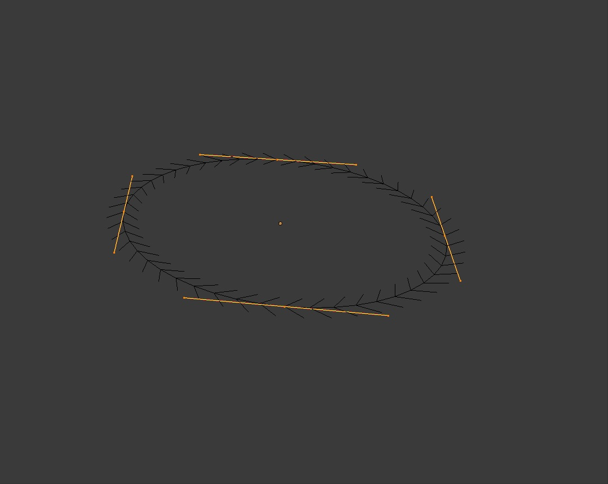
贝塞尔圆环 0.0 extrude. |
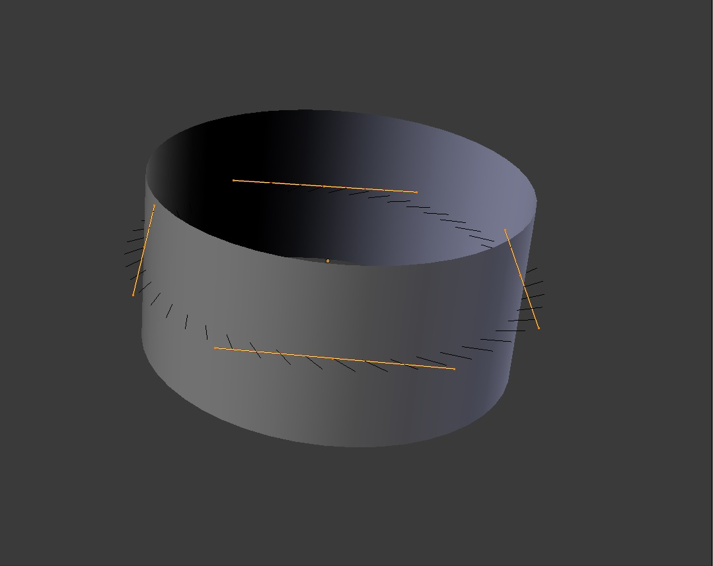
Extruded by 0.5. |
{kind=link}
{kind=link}
- Tilt
This setting controls how the normals (visualization: arrows) twist around each control point - so it is only relevant with 3D curves! You set it using the Tilt transform tool in the
Ttool shelf, theN, .You can also reset it to its default value (i.e. perpendicular to the original curve plane) with
Alt-T, . With NURBS, the tilt is always smoothly interpolated. However, with 贝塞尔, you can choose the interpolation algorithm between Linear, Ease, BSpline, and Cardinal, in the .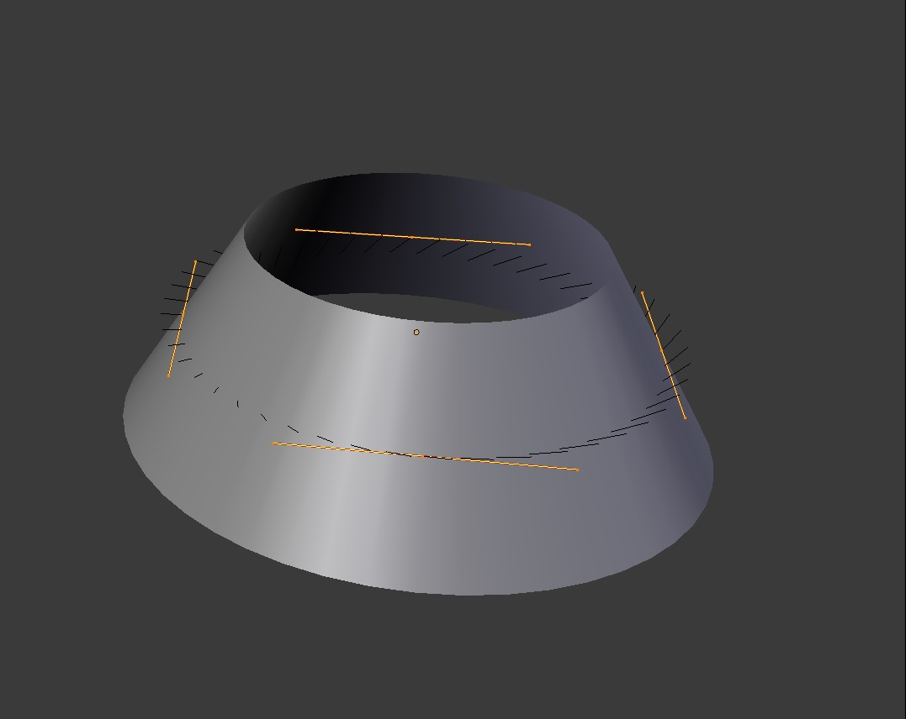30 degree Mean Tilt of all control points.
- Bevel Depth
This will add a bevel to the extrusion. See below for its effects... Note that the bevel makes the extrusion wider and higher. If set to 0.0, there is no bevel.
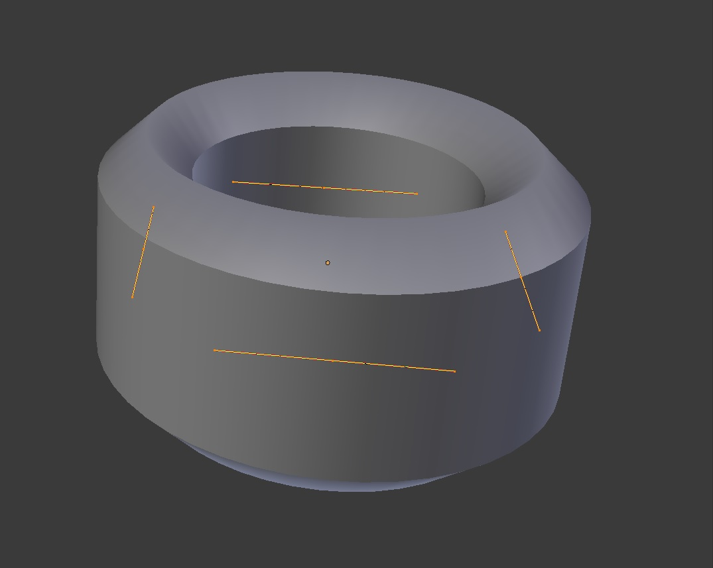Bevel depth of 0.25, fill set to full, zero Mean Tilt.
- Bevel Resolution
Controls the resolution of the bevel created by a Bevel Depth higher than zero. If set the to 0 (the default), the bevel is a simple “flat” surface. Higher values will smooth, round off the bevel, similar to the resolution settings of the curve itself...
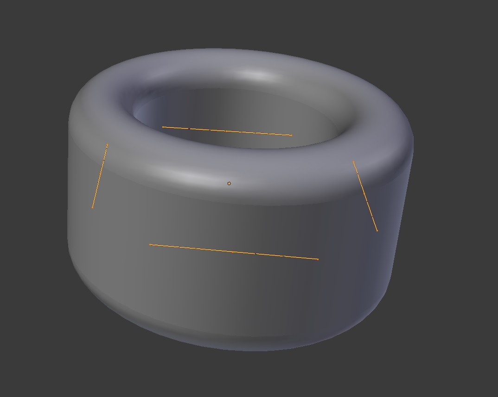Bevel resolution set to 10.
- Offset
Moves the extrusion parallel to the curve normals. Almost like scaling
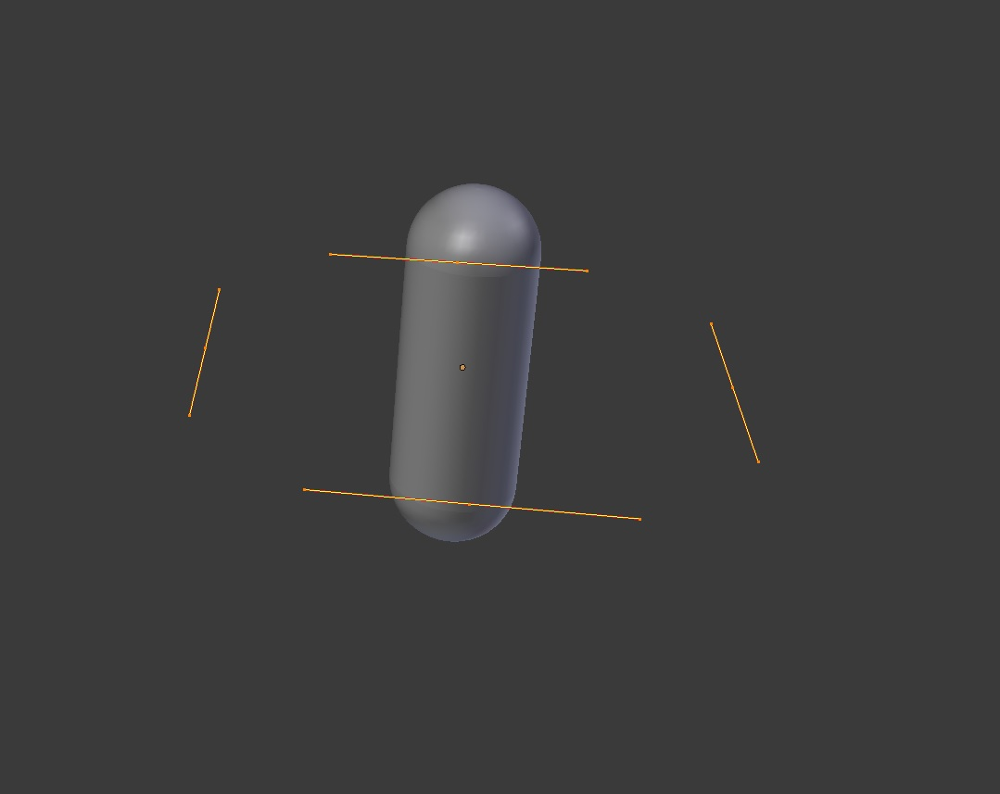-1 offset, 0.5 extrusion, 0.25 Bevel Depth, 10 Bevel resolution.
- Radius
The Radius allows you to directly control the width of the extrusion along the “spinal” curve. The Radius of the points is set using the Shrink/Fatten Radius transform tool
Alt-S, the , or theN.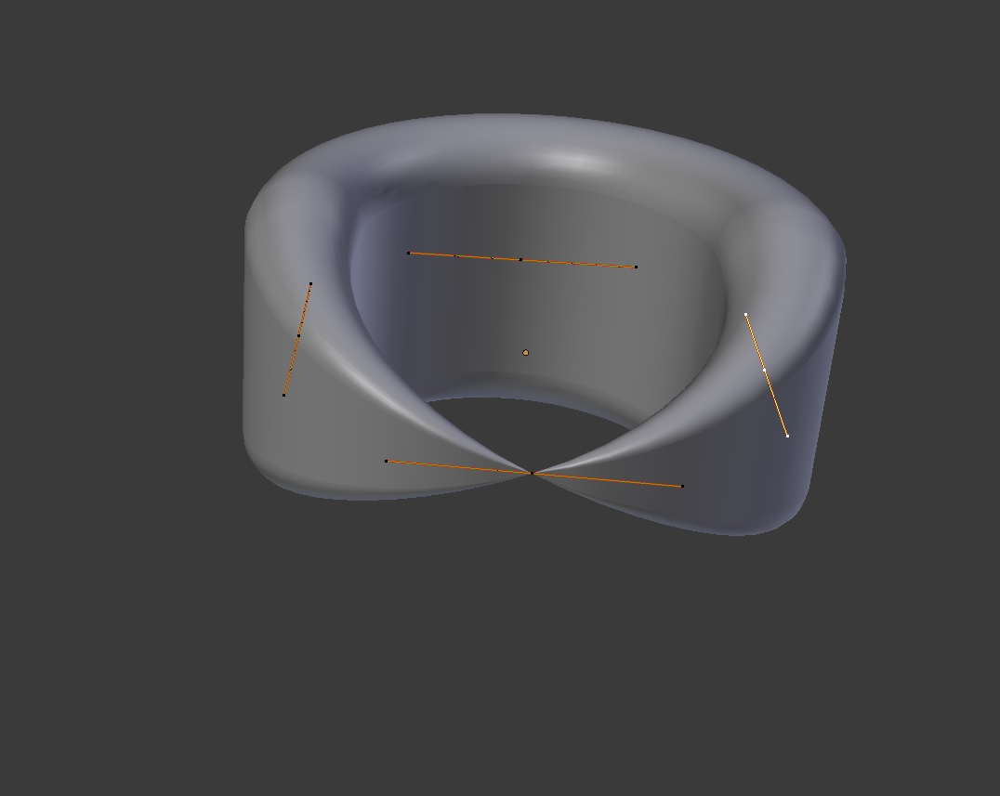One control point radius set to zero.
Tip
Remember, these curves can be converted into meshes with
Alt-Cin 物体模式
We have three sub-classes of results, depending on whether the curve is open or closed or 3D:
- Open 2D Curve
The extrusion will create a “wall” or “ribbon” following the curve shape. If using a Bevel Depth, the wall becomes a sort of slide or gutter. If your normals are facing the wrong way you can switch their direction as shown here
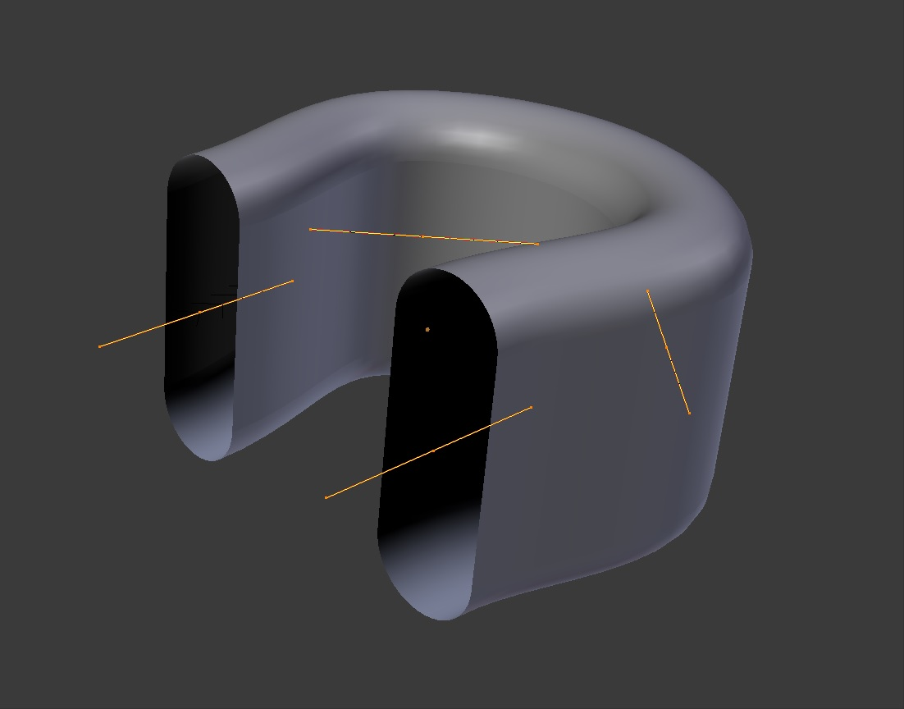Open 2D Curve with
Alt-C, fill set to none, zero offset, 0.5 extrusion, 0.25 Bevel Depth, 10 Bevel resolution.- Closed 2D Curve
This is probably the most useful situation, as it will quickly create a volume, with (by default) two flat and parallel surfaces filling the two sides of the extruded “wall”. You can remove one or both of these faces by choosing the fill mode: both, front, back, or none.
The optional bevel depth will always create a 90 degree bevels here.
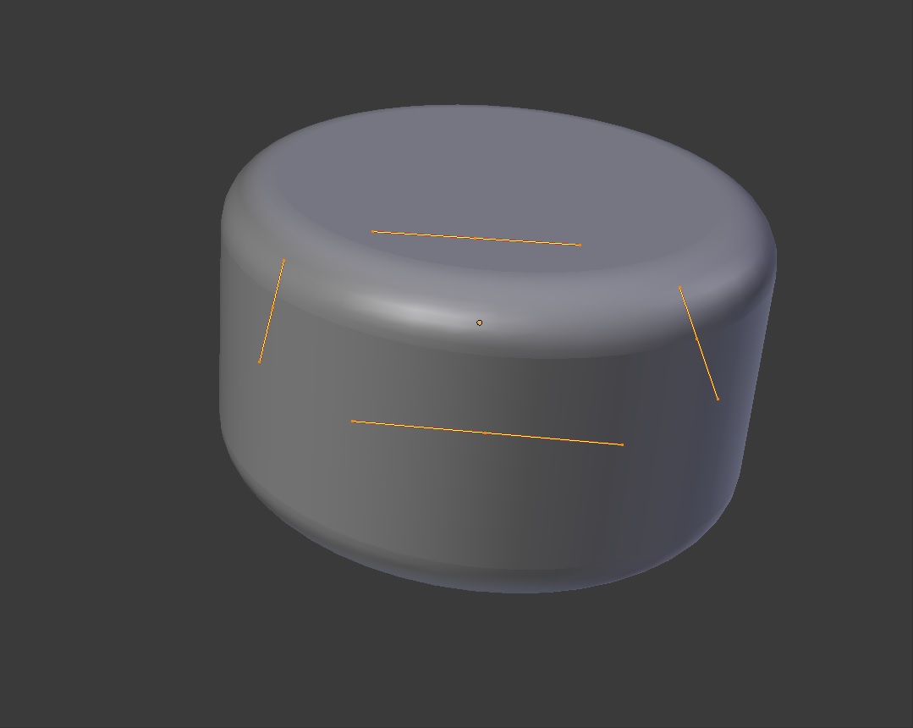Closed 2D Curve, 0.5 extrude, 0.25 Bevel Depth, 10 Bevel resolution, Fill: Both.
- 3D Curve
Here the fact that the curve is closed or not has no importance - you will never get a volume with an extruded 3D curve, only a wall or ribbon, like with open 2D curves.
However, there is one more feature with 3D curves: the Tilt of the control points (see above). It will make the ribbon twist around the curve to create a mobius strip, for example.
高级应用 Extrusion¶
These extrusions use one or two additional curve objects, to create very complex organic shapes.
To enable this type of extrusion, you have to type a valid curve object name in the BevOb field of the curve you are going to use as the “spinal column” of your extrusion. The “bevel” curve will control the cross section of the extruded object. Whether the BevOb curve is 2D or 3D has no importance, but if it is closed, it will create a “tube-like” extrusion; otherwise you will get a sort of gutter or slide object...
The object is extruded along the whole length of all internal curves. By default, the width of the extrusion is constant, but you have two ways to control it, the Radius property of control points(see above), and the “taper” object.
The taper curve is evaluated along the local X axis, using the local Y axis for width control. Note also that:
- It must be an open curve.
- The taper is applied independently to all curves of the extruded object.
- Only the first curve in a TaperOb is evaluated, even if you have several separated segments.
- The scaling starts at the first control-point on the left and moves along the curve to the last control-point on the right.
- Negative scaling, (negative local Y on the taper curve) is possible as well. However, rendering artifacts may appear.
- Might need to increase the curve resolution to see more detail of the taper
- With closed curves, the taper curve in TaperOb acts along the whole curve (perimeter of the object), not just the length of the object, and varies the extrusion depth. In these cases, you want the relative height of the TaperOb Taper curve at both ends to be the same, so that the cyclic point (the place where the endpoint of the curve connects to the beginning) is a smooth transition.
例子s¶
Let us taper a simple curve circle extruded object using a taper curve. Add a curve, then exit 编辑模式. Add another one (a closed one, like a circle); call it “BevelCurve”, and enter its name in the BevOb field of the first curve (Curve and Surface tab). We now have a pipe. Add a third curve while in 物体模式 and call it “TaperCurve”. Adjust the left control-point by raising it up about 5 units.
Now return to the Object tab, and edit the first curve’s TaperOb field in the Curve and Surface panel to reference the new taper curve which we called TaperCurve. When you hit enter the taper curve is applied immediately, with the results shown in Fig. Taper extruded curve..
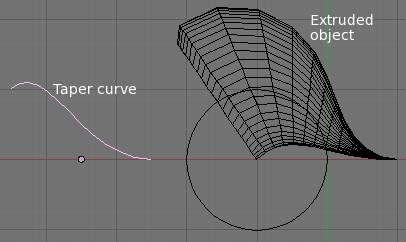
Taper extruded curve. |
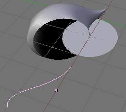
Taper solid mode. |
You can see the taper curve being applied to the extruded object. Notice how the pipe’s volume shrinks to nothing as the taper curve goes from left to right. If the taper curve went below the local Y axis the pipe’s inside would become the outside, which would lead to rendering artifacts. Of course as an artist that may be what you are looking for!
Taper example 1.
In Fig. Taper example 1. you can clearly see the effect the left taper curve has on the right curve object. Here the left taper curve is closer to the object center and that results in a smaller curve object to the right.
Taper example 2.
In Fig. Taper example 2. a control point in the taper curve to the left is moved away from the center and that gives a wider result to the curve object on the right.
Taper example 3.
In Fig. Taper example 3. we see the use of a more irregular taper curve applied to a curve circle.
代办事项: add some “bevel” extrusion with Tilt examples.